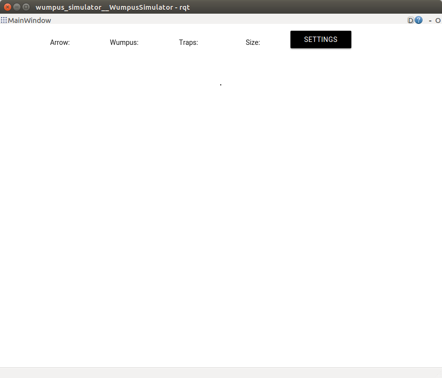
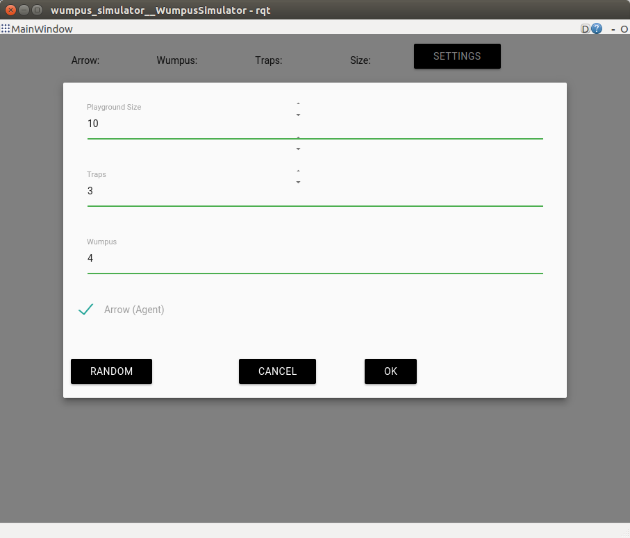
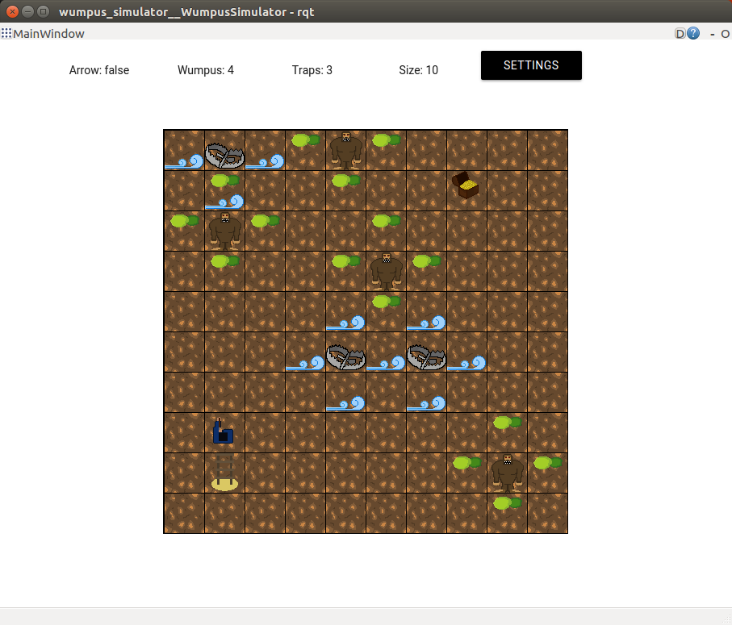

Get Started
Learn how to use the Wumpus Simulator.
Dependencies
Robot Operating System - ROSBuilding / Running the Simulator
Navigate to the wumpus_simulator package and use catkin build or catkin_make (according to your build chain) to build the simulator. For catkin build:
catkin build --this
For catkin_make:
catkin_make --pkg wumpus_simulator
This simulator is started by using the following command line:
rosrun wumpus_simulator wumpus_simulator
Communication
The communication with the simulator utilizes the Publish/Subscribe architecture of the Robot Operation System (ROS). In order to interact with the simulator, an agent needs an initial position. The position is requested by sending an InitialPostRequest on the /wumpus_simulator/SpawnAgentRequest topic. Hereby, the ID of the agent has to be defined. An ID greater then 0 is used for an agent, an ID below 0 is used for a wumpus, and the 0 itself is not used.
rostopic pub /wumpus_simulator/SpawnAgentRequest wumpus_simulator/InitialPoseRequest "agentId: 1"
The simulator responds with an initial position, the size of the playground, a flag indicating the possesion of an arrow, and an initial heading. Afterwards, the agent / wumpus has to wait for an ActionResponse containing the perception yourTurn. Once its your agent's / wumpus' turn, an AgentRequest message containing an action has to be send to the simulator.
rostopic pub /wumpus_simulator/ActionRequest wumpus_simulator/ActionRequest "agentId: 1 action: 0"
In this case, agent 1 wants to move in direction of its heading. The simulator will respond with the new position and perceptions on the new field. The following table summs up the available topics and messages:
| Topic | Message | Descrition |
|---|---|---|
| /wumpus_simulator/SpawnAgentRequest | wumpus_simulator/InitialPostRequest | Register an agent and request starting position from the simulator. |
| /wumpus_simulator/SpawnAgentResponse | wumpus_simulator/InitialPostResponse | Answer for an InitialPostRequest. Contains the x and y coordinates of the initial position, the field size, heading, and the possession of an arrow. |
| /wumpus_simulator/ActionRequest | wumpus_simulator/ActionRequest | Requests the execution of an action. |
| /wumpus_simulator/ActionResponse | wumpus_simulator/ActionResponse | Answer for a ActionRequest. Contains new position, heading, and a set of perceptions. |
Actions, headings of agent and wumpus, and perceptions
Bindings for actions, headings of agent and wumpus, and perceptions
| Action | Descrition | Value |
|---|---|---|
| move | Move the agent / wumpus in direction of its heading. | 0 |
| turnLeft | Rotate the agent anticlockwise. | 1 |
| turnRight | Rotate the agent clockwise. | 2 |
| shoot | Shoot the arrow in the direction of the agent's heading. | 3 |
| pickUpGold | Pick up the gold. | 4 |
| leave | Leave the playground. | 5 |
| Heading | Descrition | Value |
|---|---|---|
| up | Agent looks and wumpus moves north. | 0 |
| left | Agent looks and wumpus moves west. | 1 |
| down | Agent looks and wumpus moves south. | 2 |
| right | Agent looks and wumpus moves east. | 3 |
| Perception | Descrition | Value |
|---|---|---|
| bump | Agent or wumpus ran into a wall. | 0 |
| scream | A wumpus was shot. | 1 |
| silence | An arrow missed any wumpus. | 2 |
| goldFound | The agent successfully picked up the gold. | 3 |
| exited | The agent successfully left the playground. | 4 |
| notAllowed | Recieved when the action is not allowed, e.g., shooting without an arrow. | 5 |
| drafty | A trap is placed to an adjacent field. | 6 |
| stinky | A wumpus is placed on an adjacent field. | 7 |
| shiny | The gold is on this field. | 8 |
| dead | The agent or wumpus has be killed. | 9 |
| otherAgent | Trying to step on a other agent's field. | 10 |
| killedAgent | The wumpus killed an agent. | 11 |
| yourTurn | Your agent / wumpus is allowed to interact with the simulator. | 12 |
Example
Start the simulator:
rosrun wumpus_simulator wumpus_simulator
Click on Settings.
A menu will pop up allowing to adjust the playground size, the nubmer of traps and wumpus and the possession of an arrow. Furthermore, these options can be filled randomly by clicking the Random button.
This results in a playground consisting of 10x10 fields, 3 traps, and 4 wumpus. Additionally, the each agent has an arrow.

The simulator is now ready to be used. Hence, an InitialPoseRequest has to be send on the topic /wumpus_simulator/SpawnAgentRequest to the simulator.
rostopic pub /wumpus_simulator/SpawnAgentRequest wumpus_simulator/InitialPoseRequest "agentId: 1"
The simulator spawns agent 1 and sends a message on the /wumpus_simulator/SpawnAgentResponse topic containing its position (5,8), the field's edge length (10), the arrow (True), and the heading (0 for north). Another agent can be spawned by using a different ID.
agentId: 1
x: 8
y: 1
fieldSize: 10
hasArrow: True
heading: 0
Since there is only one agent, it is the agent's turn. This is indicated by an ActionResponse with the perception yourTurn (12).
agentId: 1
x: 8
y: 1
heading: 0
responses: [12]
For example, the agent can move up by sending the following ActionRequest on the /wumpus_simulator/ActionRequest topic:
rostopic pub /wumpus_simulator/ActionRequest wumpus_simulator/ActionRequest "agentId: 1 action: 0"
The agent has moved up and since its the only agent, it receives receives 2 ActionResponse messages. The first one contains the new position and perceptions. The second message indicates the next turn.

agentId: 1
x: 7
y: 1
heading: 0
responses: []
agentId: 1
x: 7
y: 1
heading: 0
responses: [12]
If there is more than one agent, the agent has to wait for its turn.